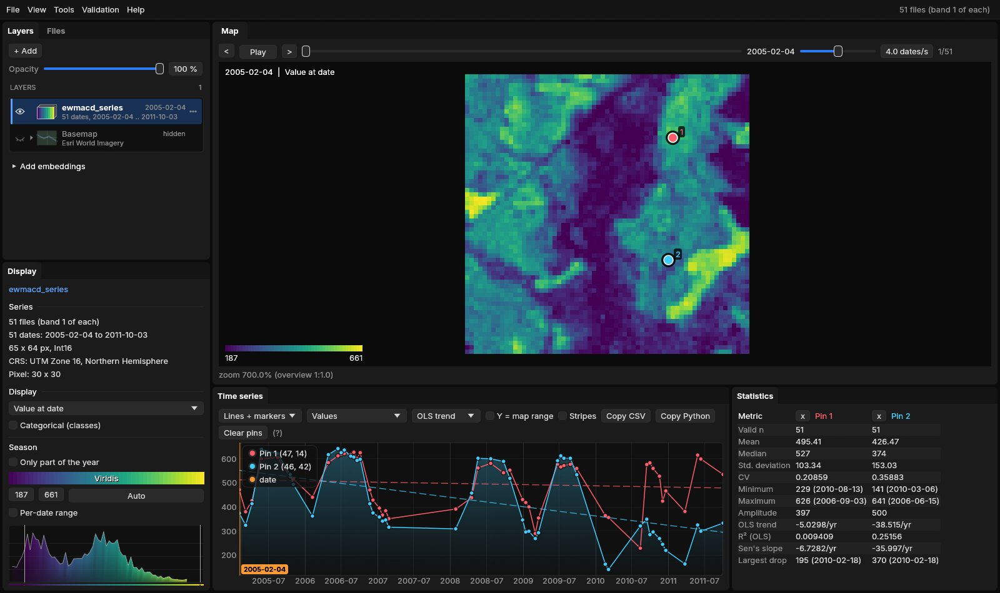
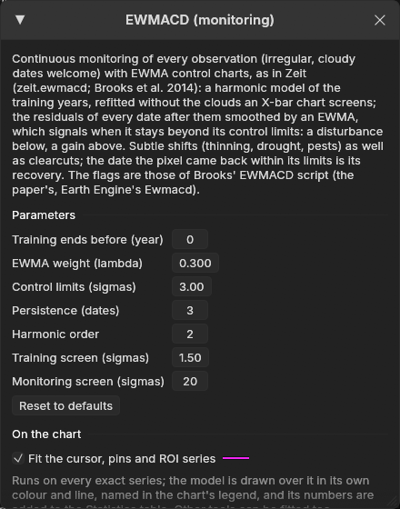
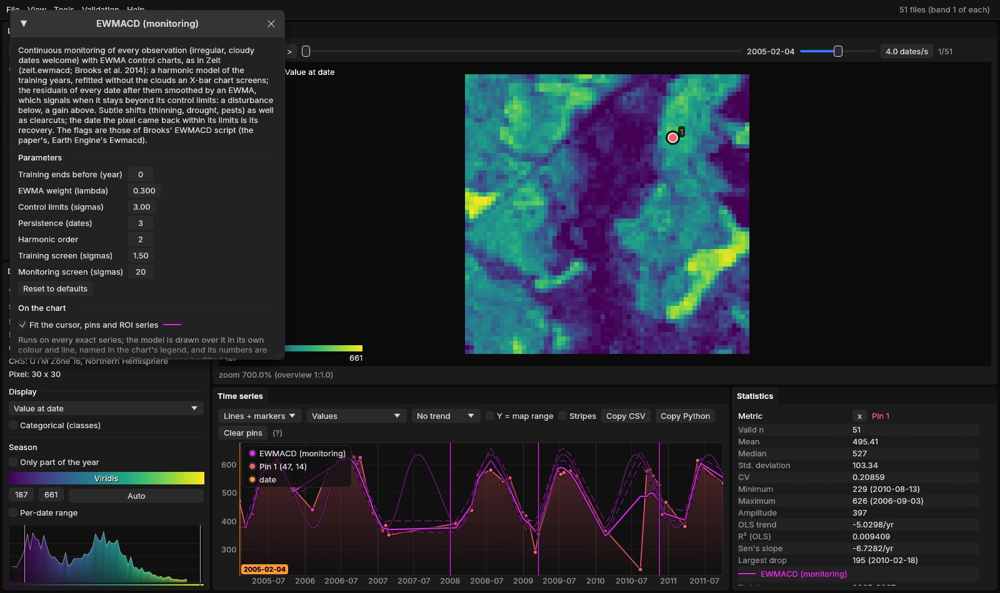
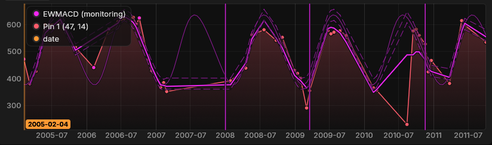
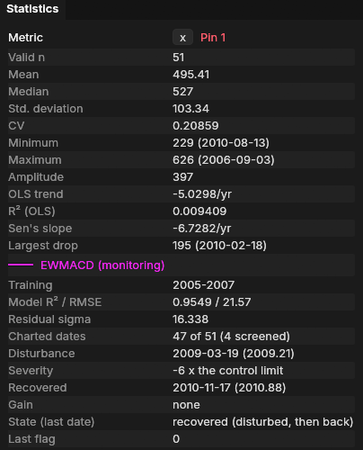
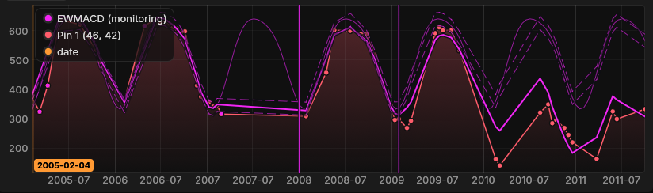
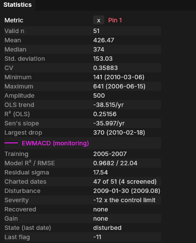
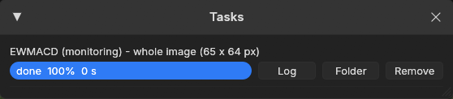
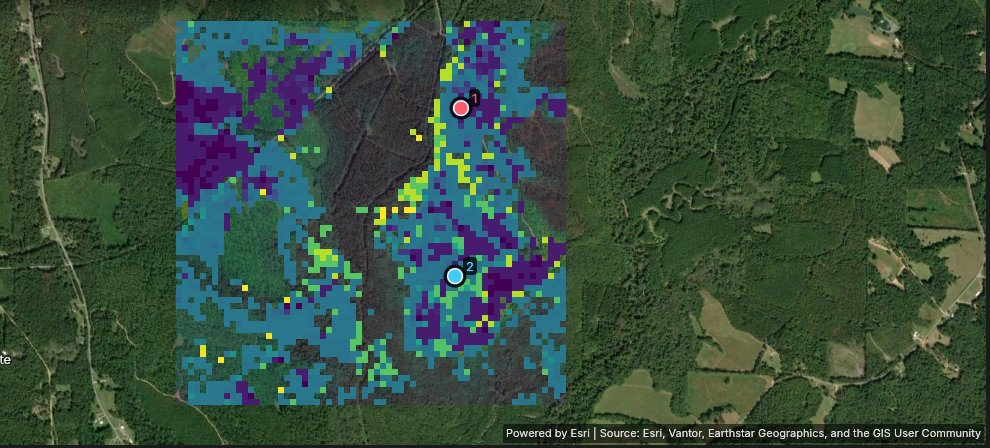
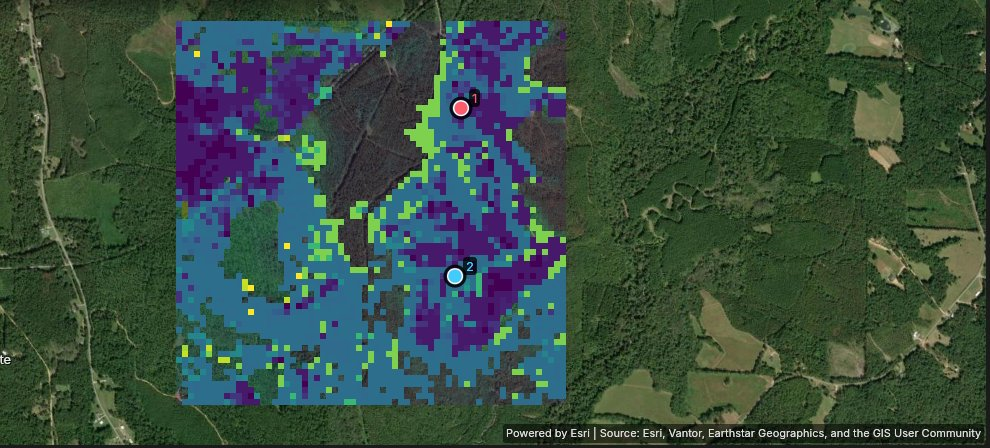

01The idea
EWMACD (Exponentially Weighted Moving Average Change Detection, Brooks et al. 2014) borrows its tools from statistical quality control. For each pixel it fits a harmonic model over the training years: a constant plus sine and cosine waves of the day of the year, which together describe the seasons of a stable pixel. Next, the model is fitted again without the training dates that sat far from it, since those are usually clouds and shadows. This step is a Shewhart X-bar chart.
From then on, every date has a residual: its value minus the model. The residuals are smoothed by an EWMA, a moving average in which each new date has weight λ and the older ones fade. While the pixel behaves like its training years, the EWMA stays between two control limits. When the EWMA stays beyond a limit, the pixel is out of control: below the lower limit is a disturbance, and above the upper limit is a gain.
- Training years
- The years the model is fitted on, assumed stable. Monitoring starts the year after them.
- Screened date
- A date left out of the chart by the X-bar screen: a cloud or shadow in the training years, or a gross anomaly later on.
- Flag
- The EWMA divided by its control limit, truncated toward zero. 0 means inside the limits; −1, −2… mean a loss of 1, 2… limits; positive values mean a gain.
- Persistence
- How many dates in a row a signal must last before it counts.
- Disturbance
- The first negative flag after the training years. Its severity is the most negative flag reached before the pixel recovers.
- Recovery
- The first date after a disturbance when the pixel is back within its limits (or above them).
An EWMA collects small shifts over several dates, so EWMACD picks up subtle changes such as thinning, drought or pests, as well as clearcuts. It uses every observation, at whatever spacing, so it does not need a regular series or a composite. It does need dates (the model is a function of the day of the year), at least 12 of them and two a year, and an index in which the change shows.
02The example
The sample data that comes with Brooks' EWMACD script (v1.3.0): 51 Landsat dates from February 2005 to October 2011, irregular and with gaps (no date between February 2007 and January 2008), of 65 × 64 pixels (about 2 × 2 km) on the Mississippi–Alabama border (path/row 21/37). The index is the tasseled cap angle × 1000, the paper's index, in which denser vegetation gives higher values. The area is mostly loblolly pine stands, where the paper looked for thinning and harvests from 2009 to 2011.


angle_2005-02-04.tif…). Janus reads each date from its file name. Pin 1 and pin 2 are the two pixels this guide follows.Opening the folder is enough: File → Open folder..., or janus ewmacd_series on the command line.
03Opening the tool

Tools → EWMACD (monitoring), among the change detection tools. The tool comes from Zeit and is built into Janus, so there is nothing to install. If the series open has no dates, fewer than 12, or fewer than two a year, the tool is disabled and says why.
04On the chart
With Fit the cursor, pins and ROI series ticked, EWMACD runs on every series the chart shows and draws over each one: the harmonic model as a thin line, the EWMA as a thick line (drawn on top of the model), and the two control limits as dashed lines. Vertical lines mark the monitoring start, the disturbance and the recovery (or the gain), and dots mark the dates the X-bar screen left out. The numbers go to the Statistics table.






The model fits the training years closely (R² 0.95). The residuals' standard deviation, 16.3, sets the width of the control limits. 4 of the 51 dates were screened out. The pixel signals on 19 March 2009 (2009.21), with a severity of −6: at its lowest, the EWMA was six control limits below the model. It is back within its limits on 17 November 2010, so its state at the last date is recovered.
Pin 2 did not come back:




Fit first, run later
Drop pins on stands you know: one harvested, one thinned, one left alone. Then change the parameters until each reads the way it should. The run on the image uses exactly the parameters the window shows.
05The parameters
| Parameter | Default | What it does |
|---|---|---|
| Training ends before (year) | 0 | The first year after the training period. The model is fitted on the years before it, and monitoring starts with it. 0 means three years of training (Brooks' default), here 2005–2007. A pixel disturbed during its training years signals as soon as monitoring starts. |
| EWMA weight (lambda) | 0.3 | The weight of each new date in the moving average. Low values give a slow, smooth chart (subtle changes, few false signals); 1 gives a chart of each date on its own. Brooks et al. found 0.1–0.5 comparable. |
| Control limits (sigmas) | 3 | The width of the limits, in standard deviations of the EWMA. The flags count how many limits the EWMA is beyond. |
| Persistence (dates) | 3 | How many dates in a row a signal must last (Earth Engine's default). A shorter run keeps the state before it. |
| Harmonic order | 2 | Sine and cosine pairs in the seasonal model. |
| Training screen (sigmas) | 1.5 | Training dates farther than this from the model (clouds, shadows) are left out of the fit and of the chart. |
| Monitoring screen (sigmas) | 20 | Later dates farther than this are left out as gross anomalies. Changes have to stay in, so on a smooth series a clearcut bigger than this would be screened out until it comes back within it. Raise it for such series. |
The training years matter most. They should be stable, and they should cover the whole year: the harmonic model only knows the seasons it was shown.
06Running it on the image
Under Run on the raster, choose the Whole image, the Visible area or the ROI, then Run. The run happens in the background on every core, and the map stays usable meanwhile.

The outputs are GeoTIFFs (in %LOCALAPPDATA%\Janus\results by default, next to the run's job.json and job.log). They open over the map as layers of their own in the Layers panel; the first one, the disturbance date, is shown. Pixels with no event are transparent.
07The maps


| Map | Meaning |
|---|---|
| Disturbance date | The first negative flag after the training years, as a decimal year. |
| Severity (control limits) | The most negative flag until the pixel recovered: −6 means six control limits below. |
| Recovery date | The first date back within the limits after the disturbance. |
| State (last date) | A class map: stable, disturbed, recovered (disturbed, then back) or gain. |
| Gain date | The first positive flag after the training years. |
| Last flag | The flag on the last date: where the pixel stands now. |
| Residual sigma | The standard deviation of the training residuals, which sets the width of the limits. High values belong to noisy pixels, whose limits are wide. |
Over this area, 2192 of the 4160 pixels (53%) were disturbed at some point: 672 in 2008, 1303 in 2009 and 217 in 2010. At the last date, 732 pixels are stable, 609 disturbed, 1583 recovered and 1236 in gain. The pine stands are thinned and harvested in rotation, and EWMACD was built to catch the thinning. The 672 that signal in 2008, as soon as monitoring starts, need a closer look: a stand thinned just before 2008, or during the training years, signals right away (as the paper notes), and so does any pixel whose 2008 is unlike its 2005–2007.
The other maps are layers of their own in the Layers panel. Show one with its eye, or hover the map: the chart keeps the pixel's series and its EWMACD fit, so every colour can be checked against the chart behind it.
08How strict
Persistence is the main trade-off between early detection and false alarms. With persistence 1, the flags are those of Brooks' EWMACD v1.3.0 script, the paper's own code. Zeit checks them date by date against the script, on synthetic series and on 400 pixels of this sample data. At that setting, a single date out of control is enough to start a disturbance:


Pin 1 shows what that means. With persistence 1 it signals in September 2008 on a single low date, and is back within the limits on the next one. With 3, the default, it waits until March 2009, when the pixel stays out of control. Wider control limits lower the count too: 1624 pixels at 4 sigmas. There is no right setting in general: check it against stands whose history you know.
On 10,000 pixels and 71 dates, Brooks' R script takes 2.8 s and Zeit 55 ms on one thread, about 50 times faster (7 ms on 19 threads). The same flags at persistence 1.
09What next
- Other ways to read every date: CCDC models every band and finds breaks, and CODED separates degradation from deforestation with the NDFI.
- Compare it. Tools → Agreement of change maps takes several maps of dates (EWMACD's disturbance date, CCDC, BFAST, LandTrendr) and maps where and when they agree.
- Validate it. The disturbance date is a map of events: the Validation guide shows how to sample it and estimate its accuracy and areas.
- Script it. The same algorithm is
zeit.ewmacdin Python.
10References
- Brooks, E. B., Wynne, R. H., Thomas, V. A., Blinn, C. E., Coulston, J. W. (2014). On-the-fly massively multitemporal change detection using statistical quality control charts and Landsat data. IEEE Transactions on Geoscience and Remote Sensing, 52(6), 3316–3332.
- Brooks, E. B. EWMACD v1.3.0, R script and sample data (the paper's code; in Earth Engine as
ee.Algorithms.TemporalSegmentation.Ewmacd). - Zeit: the change detection library behind the tools of Janus.